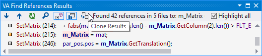
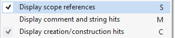

Find References
Find references faster and with more options using Visual Assist. Read and write access are highlighted blue and pink by default. Clone the results to find references to other symbols without losing your original set.

Open the context menu in the results window to set advanced options.

Learn more.